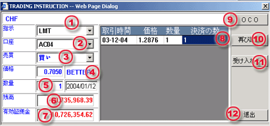

指値注文及び逆損値注文について
以下の手順に沿って指値注文又は逆損値注文を執行して下さい。
| 1 | 種類 - 指値注文/取消注文LMTの選定 |
 Limit
Order processing dialog |
| 2 | 口座 - 注文した取引口座を選ぶ | |
| 3 | 売買 - 買い選択/売り注文の選定方法 | |
| 4 | 価格 - 取引開始につき指値を入力する | |
| 5 | ロット - 成約したい取引の枚数を入力する。 | |
| 6 | 残高 - 選んだ口座の証拠金残高 | |
| 7 | 維持証拠金 - 指定口座での証拠金額 | |
| 8 | 閉じる - 決済目的取引の場合、新規注文と合致する枚数を入力して下さい。 | |
| 9 | OCO - 決済目的取引の場合、そのOCO注文の入力ボタンです。 | |
| 10 | リセット - 終了する枚数をリセットするボタン | |
| 11 | 提出用（F8） - 取引デスクへの発注指示ボタン | |
| 12 | 退去 - 引取指令画面から退去するためのボタン。 |
お客様は取引デスクに対する最後決定前に、注文確認画面でその取引内容について精査することが出来ます。
停止/指値注文が取引デスクに対し成約した場合、その注文を引受に対する署名裏書されます。活動注文パネルに未確認状況が活動注文画面に表示されます。理由はともあれ、成約、又は取消に対する確認が無い限り未確認状態が継続します。
備考：
会社の取引規定に従って、不明確な状況にある場合、ユーザーは指値注文/ストップオーダーをキャンセルすることが可能です。 不明確なオーダーのキャンセルについて参照して下さい。